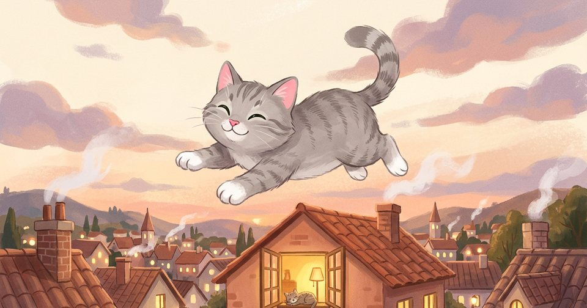

Записки с маршрута
Девять коротких писем — по одному после каждого мира, кроме финала. Их можно перечитывать в любой момент.
Открыть дневникмаленькая летательная история
Поршик — дымчатый кот с большим сердцем и очень решительными усами. Однажды он посмотрел на голубей, потом на свои лапы — и полетел через десять миров к единственному окну, где его ждут.

маршрут · 10 миров
Каждый мир — короткий перелёт на две-три минуты. Препятствия добрые, рыбки остаются в кошельке даже после неудачного залёта, а сложность растёт постепенно.
как играть
На компьютере: пробел, ↑ или W. На телефоне: тап по небу. Esc или кнопка Ⅱ — пауза. Звук и музыка выключаются отдельно.
Игра не строит непроходимых ворот: симуляцию каждый раз проверяет бот в тестах.
дневник
Записки открываются по мере прохождения и складываются на отдельной странице. Прогресс живёт только в этом браузере — без аккаунтов, сети и таблиц лидеров.
Девять коротких писем — по одному после каждого мира, кроме финала. Их можно перечитывать в любой момент.
Открыть дневникВосемь обликов, девять миссий и звёзды за каждый мир. Облики покупаются за рыбки, часть открывается за миссии.
В гардеробПосле первого финала открывается бесконечный полёт: миры сменяют друг друга, скорость растёт, а рекорд хочется побить ещё раз.
ПопробоватьПосле десятого мира Поршик наконец садится на подоконник и достаёт из-за уха письмо.
Прочитать